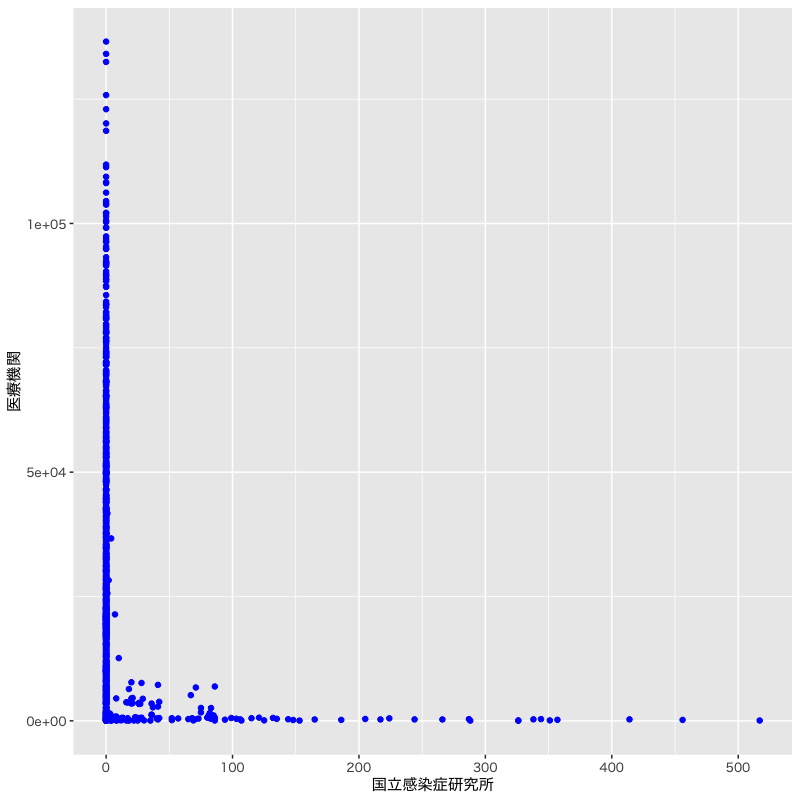
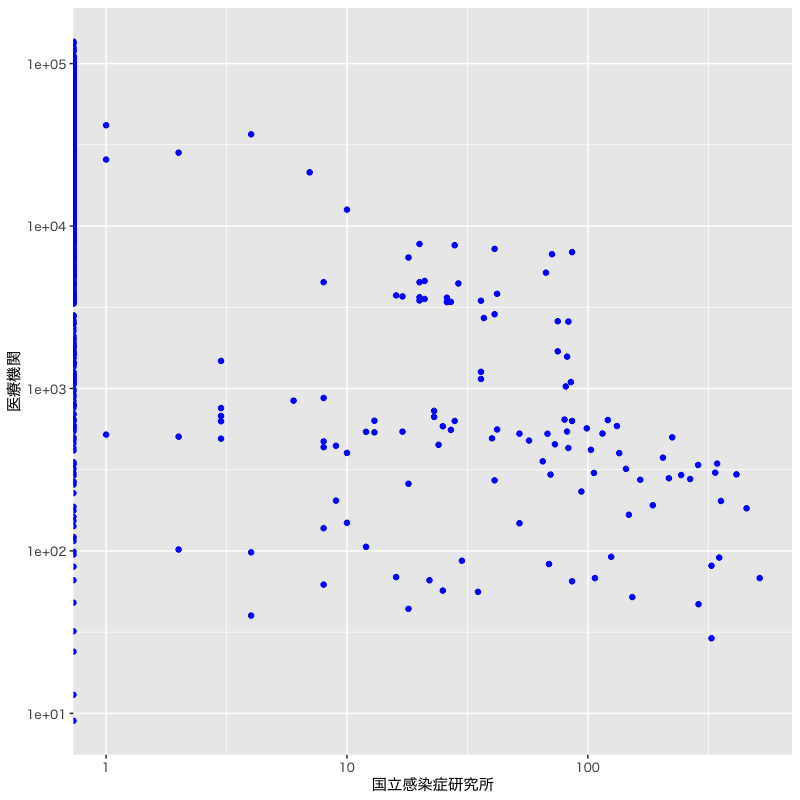
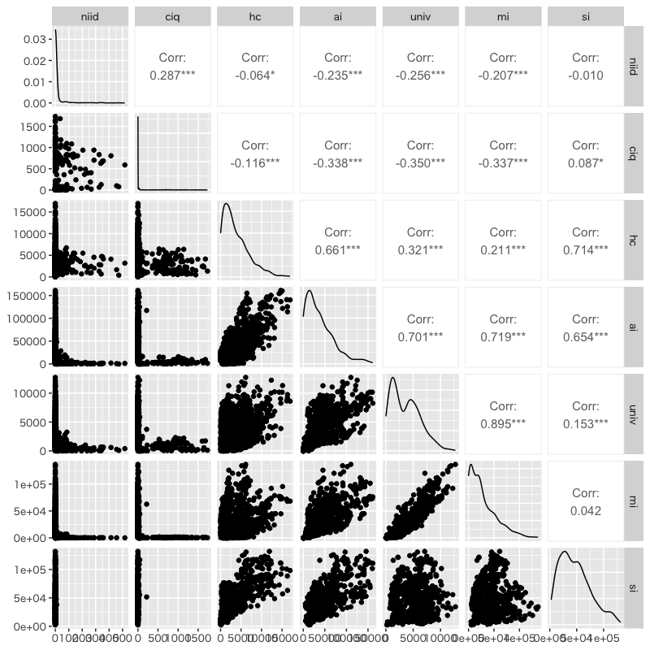
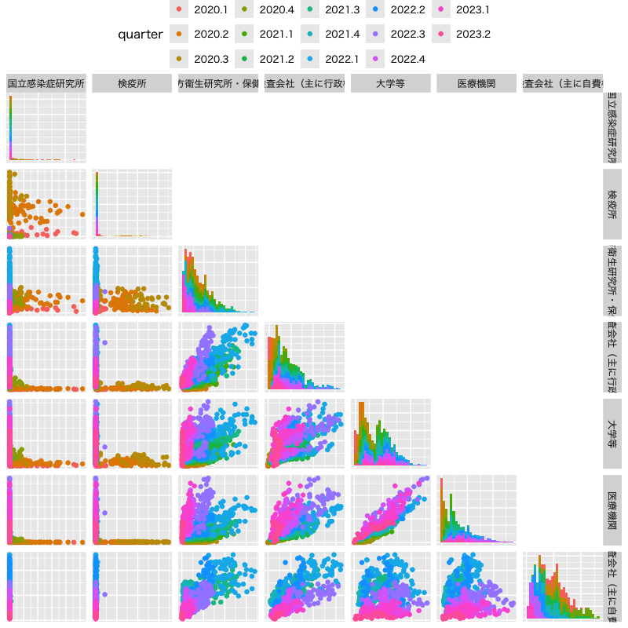

R言語速習
第2講 - データの扱い・可視化・確率シミュレーション
(Press ? for help, n and p for next and previous slide)
講義概要
- データの取り扱い
- 描画の基礎
- 確率シミュレーション
データフレーム
データ構造
- Rに用意されている基本的なデータ構造
- ベクトル (vector) : 1次元配列
- 行列 (matrix) : 2次元配列
- 配列 (array) : 多次元配列
- データフレーム (data frame) : 表 (2次元配列)
- 特殊なもの
- リスト (list) : オブジェクトの集合
データフレーム
- 複数の個体について，いくつかの属性を集計した表
- 長さの等しい列ベクトルをまとめたもの
- 各列のデータ型はバラバラでも良い
- 実データの最も一般的な形式
データフレームの例
ある小学校の1年生の身長・体重・性別・血液型のデータ
名前 身長 [cm] 体重 [kg] 性別 血液型 太郎 108 19 男 B 花子 116 21 女 O 次郎 130 25 男 AB … … … … …
“base R” vs “tidyverse”
- データ操作とグラフィクスの枠組
- base R : R の標準環境
- tidyverse : Hadley Wickham @RStudio による拡張パッケージ集
- 本講義では tidyverse を中心に説明
パッケージ集の利用には以下が必要
#' 最初に一度だけ以下のいずれかを実行しておく #' - Package タブから tidyverse をインストール #' - コンソール上で次のコマンドを実行 'install.packages("tidyverse")' #' tidyverse パッケージの読み込み library(tidyverse)
データフレームの作成
- 作成方法はいくつか用意されている
- 同じ長さのベクトルを並べる(関数
tibble::tibble()) - データフレームを結合する(関数
dplyr::bind_cols()) - マトリクスを変換する (全て同じ型の場合)
- ファイルを読み込む (CSV形式を主に扱う)
- 同じ長さのベクトルを並べる(関数
データフレームの作成の例
#' 同じ長さのベクトルを並べる (関数 tibble::tible()) #' (... <- ...) は代入した結果を表示 (foo <- tibble(one = c(1,2,3),two = c("AB","CD","EF"))) (bar <- tibble(three = c("x","y","z"),four = c(0.9,0.5,-0.3))) #' データフレームを結合する (関数 dplyr::bind_cols()) (baz <- bind_cols(foo,bar)) # bind columns
練習問題
次の表に対応するデータフレームを作成しなさい
name math phys chem bio A 90 25 65 70 B 80 50 100 50 C 70 75 70 30 D 60 100 40 80 E 50 80 75 100
ファイルの操作
ファイルを用いたデータの読み書き
- 解析においてはデータファイルの操作が必要
- 整理したデータを保存する
- 収集されたデータを読み込む
- Rで利用可能なデータファイル
- CSV 形式 (comma separated values) : テキストファイル
- RData 形式 : Rの内部表現を用いたバイナリーファイル
- Excel 形式 : Microsoft Excel ファイル (Filesタブから読み込み)
作業ディレクトリ
- 作業ディレクトリとファイルに関する注意
- Rの処理は特定のフォルダ(作業ディレクトリ)内で実行される
- ファイルは作業ディレクトリにあるものとして扱われる
- 作業ディレクトリ以外のファイルを扱う場合はパスを含めて指定する必要がある
- 作業ディレクトリに関する操作
- 確認の仕方 : コンソールの上部の表示
- 変更の仕方 : 主に Session メニューを利用
CSV ファイルの操作
関数
readr::write_csv(): ファイルの書き出しwrite_csv(x, file = "ファイル名") # データフレームxをファイルに書き出す関数
readr::read_csv(): ファイルの読み込みy <- read_csv(file = "ファイル名") # 変数yにCSVファイルの内容を読み込む- Rの標準関数 base::data.frame() とは行名の扱いに違いがあるので注意
練習問題
- 前の演習で作成したデータフレームを適当なファイルに書き出しなさい
- 書き出したファイルから別の変数に読み込みなさい
pcr_case_daily.csv(厚労省からダウンロードしたファイル)を 変数pcr_dataに読み込みなさい
データフレームの操作
要素の選択
- 選択方法はいくつか用意されている
- 添字の番号を指定する (マイナスは除外)
- 論理値 (TRUE/FALSE) で指定する
- 要素の名前で指定する
データフレームの要素の選択
z <- tibble(one = c(1,2,3), two = c("AB","CD","EF"), three = 6:8) z[1,2] # 1行2列の要素を選択 z[-c(1,3),] # 1,3行を除外 z[c(TRUE,FALSE,TRUE),] # 1,3行を選択 z[,"two"] # 列名"two"を選択(1列のデータフレームになる) z["two"] # 上記と同様の結果 z[,c("one","three")] # 列名"one"と"three"を選択(データフレームになる) z[c("one","three")] # 上記と同様の結果 z[["two"]] # 列名"two"のベクトルを選択(1列の場合しか使えない) z$two # 上記と同様の結果
部分集合(行)の選択
関数
dplyr::filter(): 条件を指定して行を選択filter(.data, ..., .by = NULL, .preserve = FALSE) #' .data: データフレーム #' ...: 行に関する条件 #' .by: グループ化を指定(実験的な実装) #' .preserve: グループ化を維持するか指定(実験的な実装) #' 詳細は"?dplyr::filter"を参照- 行に関する条件指定には以下を用いることができる
- 等号 :
==(否定は!=) - 不等号 :
<,>,<=,>= - 論理式 :
&(かつ),|(または)
- 等号 :
部分集合(列)の選択
関数
dplyr::select(): 条件を指定して列を選択select(.data, ...) #' .data: データフレーム #' ...: 列に関する条件(列の番号，名前，名前に関する条件式を利用する) #' 詳細は"?dplyr::select"を参照- 条件指定には例えば以下のような方法がある
- 含めない :
!列名,!c(列名,列名,...),!(列名:列名) - 特定の文字列で始まる :
starts_with("文字列") - 特定の文字列で終わる :
ends_with("文字列"), - 組み合わせ :
&(かつ),|(または)
- 含めない :
パイプ演算子
- 処理を順次結合する演算子 (いくつか定義がある)
|>(base R で定義; この講義ではこちらで記述する)%>%(package::magrittr)
データフレームの部分集合の取得
#' 前に作成したデータフレーム z を用いた例 (foo <- filter(z, three >= 7)) # 列 three の値が7以上の行を選択 (bar <- select(foo, c(one, three))) # 列 one,three を選択 #' パイプを用いると以下のように書ける z |> filter(three >= 7) |> select(one, three) #' 別の例 z |> filter(one != 2) |> # 列 one の値が2でない行を選択 select(starts_with("t")) # 列 "t"wo,"t"hree を選択
練習問題
pcr_case_daily.csvから以下の条件を満たすデータを取り出しなさい- 医療機関 (
f) での検査件数が2000を越えたときの 国立感染症研究所 (a) と医療機関 (f) のデータ - 大学等 (
e) と医療機関 (f) でともに検査件数が2000を越えたデータ - 2020年3月の各機関(
g,iは集計なので除く)の検査件数データ
- 医療機関 (
データフレームの集約
統計量の計算
- データを集約した値 = 統計量
- 関数
sum(): 総和を計算する - 関数
mean(): 平均 - 関数
max(): 最大値 - 関数
min(): 最小値 - 関数
median(): 中央値 - 関数
quantile(): 分位点
- 関数
- これ以外にも沢山あるので調べてみよう
列ごとの集約
関数
dplyr::summarise(): 行ごとに計算するsummarise(.data, ..., .by = NULL, .groups = NULL) #' .data: データフレーム #' ...: 求めたい統計量を計算するための処理を記述 #' .by: グループ化を指定(実験的な実装) #' .groups: グループ化の結果を指定(実験的な実装)平均の算出
#' 練習問題のデータフレームを用いた例 grade_data |> summarise(math_mean = mean(math), nums = n()) # 数学の平均を求める grade_data |> summarise(across(!name, mean)) # 名前の列以外の平均を求める
グループごとの操作
関数
dplyr::group_by(): グループ化を行うgroup_by(.data, ..., .add = FALSE, .drop = group_by_drop_default(.data)) #' .data: データフレーム #' ...: グループ化を行う項目を含む列や条件を記述 #' .add: グループ化の上書きを制御(既定値FALSEは上書き) #' .drop: グループ化に関与しない因子の扱い方グループごとに集計
#' pcr_data を用いた例 #' 医療機関 (~f~) のPCR件数を各月で集計する #' 日付の扱いに関数 lubridate::year(), lubridate::month() を利用 pcr_data |> group_by(year(date), month(date)) |> # 年と月でグループ化する summarise(total_nums = sum(f)) # f の合計値を計算する
練習問題
pcr_case_daily.csvを集計しなさい- 各機関でのPCR検査件数の最大値
- 2021年の各機関でのPCR検査件数の月ごとの最大値
datasets::mtcarsを集計しなさい- 気筒数 (
cyl) ごとに排気量 (disp) の最大値，最小値 - 気筒数 (
cyl) とギア数 (gear) ごとの燃費 (mpg) の平均値
- 気筒数 (
参考
その他の資料
- 詳細なデータの取り扱いについては以下を参照
- 講義ノート
- R言語の基礎 第3章 (pp29-52)
- 統計データ解析I スライド (base R での記述)
- 第1講 Rの基本的な操作
- 第3講 データの整理と集計
- 講義ノート
- RStudio 製の cheat sheet 集
描画の基礎
データの可視化
- データ全体の特徴や傾向を把握するための直感的で効果的な方法
- R言語には極めて多彩な作図機能が用意されている
- base R :
package::graphics(標準で読み込まれる) - tidyverse :
package::ggplot2
- base R :
- 描画関連の関数は色， 線種や線の太さ， 図中の文字の大きさなどを指定することができる
描画の初期化
package::ggplot2ではさまざまな作図関数を追加しながら描画する初期化のための関数 + 作図のための関数 + ... + 装飾のための関数 + ... # 関数が生成するオブジェクトに変更分を随時追加する関数
ggplot2::ggplot(): 初期化ggplot(data = NULL, mapping = aes(), ..., environment = parent.frame()) #' data: データフレーム #' mapping: 描画の基本となる"審美的マップ"(xy軸，色，形，塗り潰しなど)の設定 #' environment: 互換性のための変数(廃止) #' 詳細は"?ggplot2::ggplot"を参照
基本的な描画 (折線グラフ)
関数
ggplot2::geom_line(): 線の描画geom_line( mapping = NULL, data = NULL, stat = "identity", position = "identity", ..., na.rm = FALSE, orientation = NA, show.legend = NA, inherit.aes = TRUE ) #' mapping: "審美的"マップの設定 #' data: データフレーム #' stat: 統計的な処理の指定 #' position: 描画位置の調整 #' ...: その他の描画オプション #' na.rm: NA(欠損値)の削除(既定値は削除しない) #' show.legend: 凡例の表示(既定値は表示) #' 詳細は"?ggplot2::geom_line"を参照
民間検査会社と医療機関の検査件数の推移
pcr_data |> # パイプ演算子でデータフレームを関数 ggplot2::ggplot() に渡す ggplot(aes(x = date)) + # date をx軸に指定 geom_line(aes(y = d), colour = "blue") + # 民間検査会社を青 geom_line(aes(y = f), colour = "red") + # 医療機関を赤 labs(y = "number of tests") # y軸のラベルを変更
全ての機関の検査件数の推移
pcr_data |> select(-c(g,i)) |> # 集計値を除く pivot_longer(!date, names_to = "organ", values_to = "nums") |> ggplot(aes(x = date, y = nums, colour = organ)) + geom_line() + labs(title = "PCR Tests in Various Organizatios", x = "Date", y = "Number of Tests") # xy軸のラベルを変更
別の形式での描画
pcr_data |> select(-c(g,i)) |> pivot_longer(!date, names_to = "organ", values_to = "nums") |> ggplot(aes(x = date, y = nums, colour = organ)) + labs(title = "PCR Tests in Various Organizatios", x = "Date", y = "Number of Tests") + geom_line(show.legend = FALSE) + # 凡例を消す facet_grid(vars(organ)) # "organ" ごとに異なる図を並べる
基本的な描画 (散布図)
関数
ggplot2::geom_point(): 点の描画geom_point( mapping = NULL, data = NULL, stat = "identity", position = "identity", ..., na.rm = FALSE, show.legend = NA, inherit.aes = TRUE ) #' mapping: 審美的マップの設定 #' data: データフレーム #' stat: 統計的な処理の指定 #' position: 描画位置の調整 #' ...: その他の描画オプション #' na.rm: NA(欠損値)の削除(既定値は削除しない) #' show.legend: 凡例の表示(既定値は表示) #' 詳細は"?ggplot2::geom_point"を参照
国立感染症研究所と医療機関の検査件数の関係
if(Sys.info()["sysname"] == "Darwin") { # MacOSか調べて日本語フォントを指定 theme_update(text = element_text(family = "HiraginoSans-W4"))} pcr_data |> ggplot(aes(x = a, y = f)) + # x軸を a，y軸を f に設定 geom_point(colour = "blue", shape = 19) + # 色と形を指定(点の形は"?points"を参照) labs(x = pcr_names["a"], y = pcr_names["f"]) # 軸の名前を指定
各軸を対数表示
pcr_data |> ggplot(aes(x = a, y = f)) + # x軸を a，y軸を f に設定 geom_point(colour = "blue", shape = 19) + # 色と形を指定 scale_x_log10() + scale_y_log10() + # 各軸を対数で表示 labs(x = pcr_names["a"], y = pcr_names["f"]) # 軸の名前を指定
基本的な描画 (散布図行列)
- 散布図行列は複数の散布図を行列状に配置したもの
関数 GGally::ggpairs() : 散布図行列の描画
#' install.packages("GGally") # パッケージのインストール(必要な場合) library(GGally) # パッケージのロード ggpairs( data, mapping = NULL, columns = 1:ncol(data), upper = list(continuous = "cor", combo = "box_no_facet", discrete = "count", na = "na"), lower = list(continuous = "points", combo = "facethist", discrete = "facetbar", na = "na"), diag = list(continuous = "densityDiag", discrete = "barDiag", na = "naDiag"), ..., axisLabels = c("show", "internal", "none"), columnLabels = colnames(data[columns]), legend = NULL ) #' columns: 表示するデータフレームの列を指定 #' upper/lower/diag: 行列の上三角・下三角・対角の表示内容を設定 #' axisLabels: 各グラフの軸名の扱い方を指定 #' columnLabels: 表示する列のラベルを設定(既定値はデータフレームの列名) #' legend: 凡例の設定(どの成分を使うか指定) #' 詳細は"?GGally::ggpairs"を参照
各検査機関での検査件数の関係を視覚化
pcr_data |> select(!c(date,g,i)) |> # 日付と集計値を除いて必要なデータフレームに整形 ggpairs() # 標準の散布図行列
日付の情報を付加
pcr_data |> select(-c(g,i)) |> # 日付から四半期の因子を作成 mutate(quarter = as_factor(quarter(date, with_year = TRUE))) |> ggpairs(columns = 2:8, columnLabels = pcr_names[-c(1,8,10)], axisLabels = "none", aes(colour = quarter), legend = c(2,1), # 四半期ごとに色づけて(1,1)の凡例を使用 upper = "blank", diag = list(continuous = "barDiag")) + theme(legend.position = "top") # 凡例を上に表示
図の保存
- RStudioの機能を使う (少数の場合はこちらが簡便)
- 右下ペイン Plots タブから Export をクリック
- 形式やサイズを指定する
- クリップボードにコピーもできる
関数
ggsave(): 図の保存ggsave( filename, plot = last_plot(), device = NULL, path = NULL, scale = 1, width = NA, height = NA, units = c("in", "cm", "mm", "px"), dpi = 300, limitsize = TRUE, bg = NULL, ... ) #' filename: ファイル名 #' plot: 保存する描画オブジェクト #' device: 保存する形式("pdf","jpeg","png"など) #' 詳細は"?ggplot2::ggsave"を参照
練習問題
pcr_case_daily.csvを用いて以下の描画を行いなさい- 検疫所 (
b)，地方衛生研究所.保健所 (c)，民間検査会社 (d) における 検査件数の推移 - 民間検査会社 (
d)，大学等 (e)，医療機関 (f) での 検査件数の関係 (散布図)
- 検疫所 (
さまざまなグラフ
ヒストグラム
データの値の範囲をいくつかの区間に分割し， 各区間に含まれるデータの個数を棒グラフにした図
- 棒グラフの幅が区間, 面積が区間に含まれるデータの個数に比例するようにグラフを作成
- データ分布の可視化に有効(値の集中とばらつきを調べる)
geom_histogram( mapping = NULL, data = NULL, stat = "bin", position = "stack", ..., binwidth = NULL, bins = NULL, na.rm = FALSE, orientation = NA, show.legend = NA, inherit.aes = TRUE ) #' binwidth: ヒストグラムのビンの幅を指定 #' bins: ヒストグラムのビンの数を指定 #' 詳細は"?ggplot2::geom_histogram"を参照
民間検査会社での検査件数の分布
pcr_data |> ggplot(aes(x = d)) + # 分布を描画する列を指定 geom_histogram(bins = 30, fill = "lightblue", colour = "blue") + labs(x = pcr_names["d"], y = "頻度", title = "検査件数のヒストグラム")
箱ひげ図
データ散らばり具合を考察するための図
- 長方形の辺は四分位点(下端が第1，中央が第2，上端が第3)
- 中央値から第1四分位点・第3四分位点までの1.5倍以内にあるデータの 最小の値・最大の値を下端・上端とする線(ひげ)
- ひげの外側の点は外れ値
geom_boxplot( mapping = NULL, data = NULL, stat = "boxplot", position = "dodge2", ..., outlier.colour = NULL, outlier.color = NULL, outlier.fill = NULL, outlier.shape = 19, outlier.size = 1.5, outlier.stroke = 0.5, outlier.alpha = NULL, notch = FALSE, notchwidth = 0.5, varwidth = FALSE, na.rm = FALSE, orientation = NA, show.legend = NA, inherit.aes = TRUE ) #' ourlier.*: 外れ値の描画方法の指定 #' notch*: ボックスの切れ込みの設定 #' varwidth: ボックスの幅でデータ数を表示 #' 詳細は"?ggplot2::geom_boxplot"を参照
月ごとの大学等での検査件数の分布(分位点)
pcr_data |> filter(year(date) == 2021) |> # 2021年を抽出 mutate(date = as_factor(month(date))) |> # 月を因子化する ggplot(aes(x = date, y = e)) + # 月毎に集計する geom_boxplot(fill = "orange") + # 塗り潰しの色を指定 labs(title = "月ごとの検査件数 (2021年)", x = "月", y = pcr_names["e"])
棒グラフ
項目ごとの量を並べて表示した図
- 並べ方はいくつか用意されている
- 積み上げ (stack)
- 横並び (dodge)
- 比率の表示 (fill)
geom_bar( mapping = NULL, data = NULL, stat = "count", position = "stack", ..., just = 0.5, width = NULL, na.rm = FALSE, orientation = NA, show.legend = NA, inherit.aes = TRUE ) #' just: 目盛と棒の位置の調整(既定値は真中) #' width: 棒の幅の調整(既定値は目盛の間隔の90%) #' 詳細は"?ggplot2::geom_bar"を参照- 並べ方はいくつか用意されている
機関(医療機関まで)ごとの月の検査件数の推移
pcr_data |> filter(year(date) == 2021) |> mutate(month = as_factor(month(date))) |> # 月を作成 select(-c(date,g,i)) |> # 機関に限定 group_by(month) |> # 月でグループ化 summarize(across(everything(), sum)) |> # 全て(月以外)を集計 pivot_longer(!month, names_to = "organ", values_to = "nums") |> ggplot(aes(x = organ, y = nums, fill = month)) + geom_bar(stat = "identity", position = "dodge", na.rm = TRUE) + theme(legend.position = "top") + guides(fill = guide_legend(nrow = 1))

練習問題
- 適当なデータに対してグラフの作成を行ってみよう
- PCR検査件数データ (
pcr_case_daily.csv) - 東京都の気候データ (
tokyo_weather.csv) - R言語に用意されているデータ (関数
data()で一覧表示)
- PCR検査件数データ (
参考
その他の資料
- より詳細なグラフの描画については以下を参照して下さい
- 講義ノート
- R言語の基礎 第4章 (pp53-70)
- 統計データ解析I スライド
- 第4講 データの可視化
- 講義ノート
- RStudio 製の cheat sheet 集
疑似乱数
疑似乱数とは
- コンピューターで生成された数列のこと
- 完全にランダムに数字を発生されることは不可能
- Rの既定値は “Mersenne-Twister法” (
?Random参照) - 数値シミュレーションにおいて再現性が要請される場合には，
乱数の “シード値” を指定して再現性を担保 (関数
set.seed())
基本的な乱数
- ランダムサンプリング : 与えられた集合の要素を無作為抽出することで発生する乱数
- 二項乱数 : 「確率 \(p\) で表がでるコインを \(n\) 回投げた際の表が出る回数」に対応する乱数
- 一様乱数 : 決まった区間 \((a, b)\) からランダムに発生する乱数
- 正規乱数 : 平均 \(\mu\), 分散 \(\sigma^2\) の正規分布に従う乱数
乱数を生成する関数
- 関数
sample(): ランダムサンプリング - 関数
rbinom(): 二項乱数 - 関数
runif(): 一様乱数 - 関数
rnorm(): 正規乱数
練習問題
- ヘルプを用いて以下の関数を調べよ
- 関数
sample() - 関数
rbinom() - 関数
runif() - 関数
rnorm() - 関数
set.seed()
- 関数
- 以下の試行を実装してみよ
- サイコロを10回振る
- 4枚のコインを投げたときの表の枚数
モンテカルロ法
モンテカルロ法とは
- 乱数を使った統計実験
- 計算機上でランダムネスを実現 (擬似乱数)
- ランダムネスから導かれる種々の数学的結果を観察
例 : 中心極限定理
定理
\(X_1,X_2,\dotsc\) を独立同分布な確率変数列とし， その平均を \(\mu\) ，標準偏差を \(\sigma\) とする． このとき，すべての実数 \(a< b\) に対して
\begin{equation} P\Bigl(a\leq\frac{\sqrt{n}(\bar{X}_n-\mu)}{\sigma}\leq b \Bigr) \to\frac{1}{\sqrt{2\pi}}\int_a^be^{-\frac{x^2}{2}}dx\quad (n\to\infty) \end{equation}が成り立つ．
- 直感的には “多数の独立な確率変数の和はほぼ正規分布に従う” ことを主張している
確率シミュレーション
#' 確率変数の分布の設定 (例 : 区間[-1,1]の一様乱数) my_rand <- function(n) { # n個の乱数を生成 return(runif(n,min = -1,max = 1)) } #' 標本平均の計算 my_mean <- function(n) { # n個のデータで計算 return(mean(my_rand(n))) } #' Monte-Carlo実験 set.seed(123) # 実験を再現したい場合はシード値を指定する mu <- 0; sigma <- sqrt(1/3) # 理論平均と標準偏差 mc <- 5000 # 実験の繰り返し回数 for(n in c(1,2,4,8,16)){ # nを変えて実験 p <- tibble(x = replicate(mc, my_mean(n))) |> # mc回実験し標本平均を記録 ggplot(aes(x)) + geom_histogram(aes(y = after_stat(density)), # 密度表示 fill = "orchid", alpha = 0.5, # 塗り潰しの色 colour = "purple") + # 境界線の色 geom_function(fun = \(x) dnorm(x, mean = mu, sd = sigma/sqrt(n)), colour = "orange", linewidth = 1.5) + # 理論曲線を重ねる labs(x = expression(bar(X)), # x軸の表示 title = paste0("n=",n)) # タイトルにnを記載 print(p) # for 文の中では明示的に print する必要がある }
例 : コイン投げの賭け
- AとBの二人で交互にコインを投げる． 最初に表が出た方を勝ちとするとき， AとBそれぞれの勝率はいくつとなるか？
コイン投げは関数
sample(),rbinom()などを用いて模擬できるsample(0:1,1) # 0と1が入った壺からから1つ選ぶ rbinom(1,size = 1,prob = 0.5) # 表裏が等確率で出る1枚のコインを1回投げる
確率シミュレーション
#' コイン投げの試行 (いろいろな書き方があるので以下は一例) my_trial <- function(){ while(TRUE){ # 永久に回るループ if(rbinom(1,size = 1,prob = 0.5)==1){return("A")} # Aが表で終了 if(rbinom(1,size = 1,prob = 0.5)==1){return("B")} # Bが表で終了 #' どちらも裏ならもう一度ループ } } #' Monte-Carlo実験 set.seed(8888) # 実験を再現したい場合はシード値を指定する mc <- 10000 # 実験回数を設定 my_data <- replicate(mc,my_trial()) #' 簡単な集計 table(my_data) # 頻度 table(my_data)/mc # 確率(推定値)
練習問題
- 以下の簡単な双六ゲームの実験を行ってみよう
- ゴールまでのます目は100
- さいころを振り出た目の数だけ進む
- ゴールに辿り着くまで繰り返す
- さいころを振る回数の分布は?
参考
その他の資料
- より詳細な確率シミュレーションについては以下を参照して下さい
- 講義ノート
R言語の基礎 第5章 (pp71-82)
- Buffon の針
- Monty Hall 問題
- 秘書問題 (最適停止問題)
などの実装例がある
- 統計データ解析I スライド
- 第5講 確率シミュレーション
- 講義ノート
次回の予定
- 第1回: 回帰モデルの考え方と推定
- 第2回: モデルの評価
- 第3回: モデルによる予測と発展的なモデル